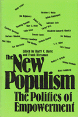

Can populism revive a spirit of idealism and hope for democratic change?
Can populism revive a spirit of idealism and hope for democratic change?


 Can populism revive a spirit of idealism and hope for democratic change?
Can populism revive a spirit of idealism and hope for democratic change?

|  |
The New PopulismThe Politics of Empowermentedited by Harry C. Boyte and Frank Riessmanpaper EAN: 978-0-87722-449-5 (ISBN: 0-87722-449-8) |
Can populism revive a spirit of idealism and hope for democratic change? Undo the bigness of government, business and labor? Have a profound impact on the 1988 election? Here, leading thinkers and social critics show how it might win majority support and change the face of American democracy.
Harry C. Boyte, Director of the Project on a New Public Philosophy, Hubert H. Humphrey Institute, is co-author of Citizen Action, The New American Populism, Backyard Revolution: Understanding the New Citizen Movement (Temple), and Building America: The Democratic Promise of Public Work (with Nancy N. Kari).
Frank Riessman is Director of the National Self-Help Clearinghouse and Co-editor of the journal Social Policy.
Contributors: Lawrence Goodwyn, Gianna Pomata, Julian Rappaport, Ernesto Cortes, Cora Tucker, Mike Miller, Michael Ansara, S. M. Miller, Charlene Spretnak, Gar Alperovitz, Colin Greer, Barry Goldberg, Elizabeth Karmarck Minnich, Cornel West, Adrienne Asch, Tom Harkin, Jim Hightower, Barbara Mikulski, Mary G. Dietz, Joe Holland, Sheldon S. Wolin, and the editors.
Political Science and Public Policy
© 2015 Temple University. All Rights Reserved. This page: http://www.temple.edu/tempress/titles/393_reg.html.